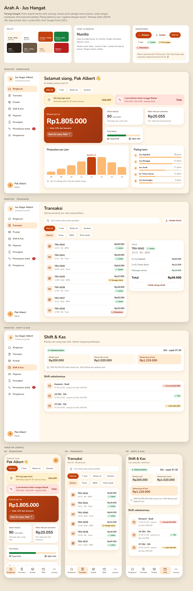

Dokumen ini menggantikan hi-fi gelap lama (DEAR-5/DEAR-40). Terang-hangat, krem + oranye jeruk, Nunito, kartu 24px, tombol pil, ikon Lucide. Untuk Frontend Engineer: salin §1 token ke @theme di apps/dashboard/src/styles.css, lalu ikuti komponen (§2), AppShell (§3), halaman (§4), dan copy (§5). Aplikasi kasir tetap gelap dan tidak berubah.
/void tidak berubah (kata di URL tidak terlihat pengguna).outlet.name.Semua kebutuhan data sudah ada: omzet + compare_previous_period, daftar transaksi, shift, produk/kategori, pegawai, perangkat, pengaturan toko, permintaan void. Satu hal murni sisi klien: aturan rame/sepi memakai ringkasan harian 7 hari yang sudah bisa diambil dari endpoint laporan; bila Frontend mendapati endpoint itu tidak menyediakan rincian harian, tandai di issue (bukan perubahan API yang diminta sekarang). Lencana jumlah persetujuan batal memakai daftar void berstatus menunggu yang sudah dimuat Ringkasan.
Kontras dihitung dengan rumus WCAG 2.1 (angka di swatch). Teks biasa ≥ 4,5:1, batas kontrol ≥ 3:1 (line-strong 4,6:1).
| Peran | Ukuran/berat | Contoh | Kelas Tailwind |
|---|---|---|---|
| Display (omzet) | 48/52 · 800 · -0.03em | Rp1.250.000 | text-5xl |
| H1 desktop | 30/36 · 800 | Selamat siang, Pak Albert | text-3xl |
| H1 HP | 24/30 · 800 | Selamat siang, Pak Albert | text-2xl |
| H2 kartu | 18/24 · 800 | Terlaris hari ini | text-lg |
| Angka KPI | 26/32 · 800 · tabular-nums | 90 gelas | text-[26px] |
| Body | 15/22 · 600 | Siti lagi jaga kasir sejak 07.30. | text-[15px] |
| Label/tombol | 14–15 · 800 | Tandai habis | text-sm |
| Caption | 12.5–13/18 · 700 | 2 item · Tunai | text-[13px] |
| Token | Nilai | Dipakai untuk |
|---|---|---|
| Radius | 16 · 24 · 28 · pil 999 | kontrol, kartu info · kartu · bottom sheet · tombol/chip/badge |
| Spacing | 4 · 8 · 12 · 16 · 20 · 24 · 32 | gap kartu 12–16; padding kartu 20 (HP 18); padding halaman HP 16, desktop 30×36 |
| Bayangan | card · up · modal | kartu · tab bawah + sheet · dialog |
| Target sentuh | ≥ 44 × 44 (tombol utama 48) | semua tombol, chip, baris, ikon-tombol, tab (52) |
| Fokus | outline 3px --color-focus, offset 2px | semua elemen interaktif, :focus-visible |
| Gerak | 150–250ms ease-out | tekan: skala .98; bar grafik tumbuh; angka omzet naik. Matikan semua saat prefers-reduced-motion. |
| Breakpoint | < 768 HP (tab bawah) · ≥ 768 tablet/desktop (sidebar) | sama dengan md: yang dipakai sekarang. Konten desktop maks 1100–1264 di tengah bila layar lebih lebar. |
@theme {
/* Arah A · Jus Hangat (DEAR-63). Ganti blok @theme lama; set color-scheme: light. */
--color-bg: #FFF7EA;
--color-surface: #FFFFFF;
--color-ink: #2B2118;
--color-muted: #6B5846;
--color-line: #F0E1C8; /* garis dekoratif */
--color-line-strong: #8C6F55; /* batas input/tombol sekunder, 4,6:1 */
--color-pri: #C2410C; /* tombol utama, 5,2:1 dengan teks putih */
--color-pri-hover: #9A3412;
--color-pri-press: #7C2D12;
--color-tint: #FFEBD2; /* nav aktif, ikon, chip sub */
--color-tint-ink: #7C2D12;
--color-tint-hover: #FFDDB5;
--color-focus: #1D4ED8; /* outline fokus 3px, offset 2px */
--color-dis-bg: #EFE4D0;
--color-dis-ink: #7A6552;
--color-danger: #B91C1C;
--color-danger-hover: #991B1B;
--color-need-bg: #FFE2DC; /* kartu butuh tindakan / badge nonaktif */
--color-need-ink: #8A1C0F;
--color-need-line: #F8BFB4;
--color-warm-bg: #FFF1CC; /* kartu info / badge peringatan */
--color-warm-ink: #6B4300;
--color-warm-line: #F6DD95;
--color-ok: #15803D;
--color-ok-bg: #DCF5E3;
--color-ok-ink: #14532D;
--color-info-bg: #DBEAFE;
--color-info-ink: #1E3A8A;
--color-bar: #FDBA74; /* batang grafik; puncak pakai --color-pri */
--color-cash: #FDE3C0; /* segmen tunai pada bar tunai/QRIS; QRIS pakai --color-ok */
--font-sans: 'Nunito', system-ui, 'Segoe UI', sans-serif;
--radius-ctl: 16px; /* input, kartu info, baris aktif */
--radius-card: 24px;
--radius-sheet: 28px;
--radius-pill: 999px; /* tombol, chip, badge */
--shadow-card: 0 2px 0 #F0E1C8, 0 10px 24px rgb(124 45 18 / 0.07);
--shadow-up: 0 -4px 20px rgb(124 45 18 / 0.10); /* tab bawah, bottom sheet */
--shadow-modal: 0 24px 60px rgb(43 33 24 / 0.28);
}
@layer base {
html { color-scheme: light; }
body { background: var(--color-bg); color: var(--color-ink); font-family: var(--font-sans); }
:focus-visible { outline: 3px solid var(--color-focus); outline-offset: 2px; }
@media (prefers-reduced-motion: reduce) { * { animation: none !important; transition: none !important; } }
}
Font: muat Nunito (Google Fonts, OFL) lewat <link> di index.html. Ikon: paket lucide-react (ISC). Ukuran ikon 20 (24 di tab bawah, 44 di state kosong). Ikon dekoratif aria-hidden; tombol ikon wajib aria-label. Emoji 🍹🔥✅ hanya di sapaan dan state kosong.
| Varian | Pakai untuk | Aturan |
|---|---|---|
| primary | satu aksi utama per kartu/layar (Simpan, Setujui, Masuk) | min-h 48; padding 0 22; teks 15/800; hover pri-hover; ditekan pri-press + scale .98 |
| secondary | aksi sejajar (Tolak, Atur ulang PIN, Coba lagi) | latar putih, batas line-strong 2px, teks tint-ink |
| ghost | Batal, aksi tersier | tanpa batas; hover tint |
| danger | aksi merusak yang sudah dikonfirmasi (Ya, cabut; Ya, setujui batal) | latar danger; versi outline danger-o untuk pemicu di baris (Nonaktifkan, Cabut) sebelum dialog |
| small | aksi di baris tabel | min-h 44, bukan 48 |
| state | default · hover · ditekan · fokus (outline) · nonaktif (dis-bg, aria-disabled, tanpa hover) · loading (spinner + teks “Menyimpan…”, tombol tetap lebar, aria-busy). Jangan nonaktif tanpa alasan terbaca; galat validasi ditampilkan di field. | |
Badge selalu ikon + teks, tinggi ≥ 26. Peta: ok = check · warn = alert/clock · off = x · info = clock. Selisih kas: ✓ Pas / ▼ Kurang / ▲ Lebih dengan teks nominal. Lencana angka (.nbadge, merah danger, teks putih 6,5:1) hanya untuk jumlah persetujuan batal, hilang saat 0, aria-label “2 permintaan batal menunggu”.
| Jenis | Warna | Isi | Contoh |
|---|---|---|---|
| Info | warm-*, ikon info di kotak terang | kabar biasa, tanpa ajakan mendesak, tautan teks | Shift berjalan, QRIS tak terbaca |
| Butuh tindakan | need-*, ikon alert di kotak gelap solid | judul + sub + satu tautan/tombol ajakan; maksimal satu per tindakan | Persetujuan batal menunggu |
| Galat | putih, batas danger 2px, role="alert" | pesan lugas + cara memperbaiki | Login salah |
Kartu (.card): latar putih, radius 24, padding 20 (HP 18), batas line 1px + shadow-card. Kartu klik: hover naik 1px dan batas tint-ink; seluruh kartu satu target dengan fokus terlihat. Kartu hero omzet: gradien pri → pri-hover, teks putih (5,2–7,3:1).
Santai dulu, Pak. Nanti langsung muncul di sini.
Cek sinyal, lalu coba lagi ya.
Coba lagiEmptyState: emoji 44 + judul 19/800 + satu kalimat + (bila ada aksi) tombol primary. ErrorState: ikon Lucide wifi 44 warna danger, judul + saran + tombol secondary “Coba lagi” (memanggil refetch), role="alert". Galat untuk sebagian halaman (mis. grafik) tampil di dalam kartu yang bersangkutan, bukan menutup satu halaman penuh. Loading: kerangka kartu abu-krem (line) berdenyut; aria-busy.
| Bagian | Aturan |
|---|---|
| Ukuran | min-h 48, radius 16, teks 15,5/600, padding 0 16; area teks min-h 84 |
| Label | di atas, 14/800, selalu terlihat (bukan placeholder); bantu 13 muted |
| State | default (batas line-strong) · fokus (batas + outline focus) · galat (batas danger 2px, latar #FFF5F3, ikon + teks galat di bawah, aria-invalid + aria-describedby) · nonaktif (dis-bg) |
| Select | tampilan sama dengan input + ikon chevron-down; pakai <select> asli di HP |
| Sakelar | 52×30 (area sentuh 44 tinggi dengan padding), aktif ok, label di sampingnya, role="switch" |
Baris: min-h 64, ikon/avatar 46 radius 14 latar tint, judul 15,5/800, sub 13 muted, kanan: nilai + badge. HP: seluruh baris = satu target (chevron di kanan), aksi masuk ke bottom sheet. Desktop: aksi tampil di baris (tombol small dan tombol ikon 44), hover latar bg. Tabel penuh (desktop, Transaksi/Shift) memakai th 12,5 kapital muted, baris dibatasi line, angka rata kanan tabular-nums. Chip: min-h 44, radius pil, aktif pri (putih 5,2:1), subfilter aktif tint; role="tab"/aria-pressed sesuai fungsi.
Transaksi akan dibatalkan dan keluar dari omzet. Tindakan ini tercatat.
| Komponen | Aturan |
|---|---|
| Bottom sheet | HP saja. Radius atas 28, pegangan 44×5, tinggi ≤ 85% layar, scrim rgb(43 33 24/.45), tombol utama di dasar. Tutup: ketuk scrim, tombol Batal, atau geser turun. Fokus masuk ke judul dan terkunci di dalam; role="dialog" aria-modal. Dipakai: filter transaksi, form produk/pegawai/perangkat, menu Lainnya, aksi baris. |
| Dialog | Desktop (≥768). Lebar 440, radius 24, shadow-modal. Esc menutup; fokus kembali ke pemicu. Aksi merusak: tombol danger di kanan, Batal (secondary) di kirinya, judul berupa pertanyaan dengan nama objek. Di HP form yang sama tampil sebagai bottom sheet (satu komponen, dua presentasi). |
Sidebar desktop 248px (putih, garis kanan line); item min-h 46, ikon Lucide 20 + label, aktif tint + tint-ink + aria-current="page", hover latar bg. Lencana angka di “Persetujuan batal”. Pengguna + tombol Keluar di dasar (target 44). Di HP: tab bawah 5 item (ikon 24 + label 12), tinggi 52 + area aman, aktif berlatar tint; “Lainnya” memuat Pegawai, Perangkat, Persetujuan batal, Pengaturan, Keluar dan membawa lencana jumlah persetujuan batal supaya tetap terlihat. Ikon: Ringkasan house · Transaksi receipt · Produk cup-soda · Pegawai users · Perangkat smartphone · Shift & Kas wallet · Persetujuan batal circle-x · Pengaturan store · Lainnya ellipsis · Keluar log-out.
Desktop · sidebar (hover pada Transaksi, aktif Ringkasan)
HP · tab bawah
HP · sheet Lainnya
| Aturan | Isi |
|---|---|
| Rute | / · /transaksi · /produk · /pegawai · /perangkat · /shift · /void (label “Persetujuan batal”) · /pengaturan · /lainnya (hanya HP). Tidak ada perubahan rute. |
| Tajuk HP | tanpa header atas terpisah; judul halaman ada di kepala konten (nama toko hanya di sidebar dan Login) |
| Lencana | jumlah void menunggu; sembunyi saat 0; “9+” bila > 9 |
Layout final tiga halaman ini adalah mockup Arah A yang sudah disetujui, HP 390 dan desktop 1264 (konten desktop melebar sampai 1440 tanpa perubahan struktur). File: research/owner-direction-a.html dan research/owner-direction-a.png. Spesifikasi ini menambah token final, state komponen, dan copywriting yang belum ada di mockup tersebut. Bila ada selisih, dokumen ini yang berlaku.

Tanpa AppShell. Desktop dua kolom (hero oranye + kartu form 420). HP satu kolom, sapaan di atas kartu. Enter mengirim; tombol loading tetap lebar; galat di kartu role="alert" ditambah galat per field. Ikon mata mengganti tampil/sembunyi kata sandi (aria-label “Tampilkan kata sandi”).
HP 390 · normal
HP 390 · galat + loading
Desktop 1440
Omzet, shift, dan persetujuan batal. Semua ada di sini, dari HP maupun laptop.
Daftar produk dengan cari + chip kategori. HP: ketuk baris membuka sheet aksi/ubah; ikon sliders-horizontal membuka kelola kategori (sheet). Desktop: kategori sebagai kartu di kanan, aksi langsung di baris. Hapus selalu lewat dialog konfirmasi.
HP 390 · daftar
HP 390 · tambah produk (sheet)
Desktop 1440
Kategori yang masih berisi produk tidak bisa dihapus.
Daftar pegawai dengan avatar inisial, badge Aktif/Nonaktif. HP: ketuk baris → sheet aksi (Atur ulang PIN, Nonaktifkan). Desktop: aksi di baris. PIN 6 digit, tampil bertitik, inputmode="numeric". Nonaktifkan butuh konfirmasi.
HP 390 · daftar + sheet aksi
Desktop 1440
Daftar perangkat dengan badge Terhubung / Menunggu pairing / Dicabut. Tambah perangkat → nama → kode pairing tampil besar (34/900, jarak huruf 0,2em, mudah dibaca dari kejauhan). Cabut lewat dialog danger.
HP 390
Ketuk perangkat buat lihat kode pairing atau mencabutnya.
Desktop 1440
Masukkan kode ini di aplikasi kasir. Berlaku sekali pakai.
Contoh tampilan. Format kode mengikuti API.
Tiga kartu: Toko, Struk, QRIS statis. Desktop: pratinjau struk menempel di kanan (sticky). HP: pratinjau di bawah form; tombol Simpan tertambat di atas tab bawah. Perubahan belum tersimpan memicu peringatan keluar halaman.
HP 390
Desktop 1440
Kartu per permintaan, bukan tabel, supaya alasan terbaca penuh. Tab Menunggu / Disetujui / Ditolak. Setujui = primary (dialog danger konfirmasi), Tolak = secondary. Status sudah diproses ditangani lewat pesan galat dialog. Desktop dua kolom.
HP 390 · ada permintaan
HP 390 · kosong
Belum ada permintaan batal yang nunggu persetujuan.
Desktop 1440
Nada: ramah, pendek, kata kerja; “Pak” sesuai keputusan sapaan. Tidak bercanda saat soal uang, galat, dan batal (lugas tanpa jargon). Emoji hanya 🍹🧑🍳📱✅👋.
| Halaman | Elemen | Teks final | Catatan |
|---|---|---|---|
| Semua | Nama aplikasi / sidebar | Jus Bu Rini (nama toko) · “Dashboard Pemilik” | Nama toko dari profil outlet; fallback “Kelola Kasir”. |
| Login | Judul | Selamat datang, Pak 👋 | Fallback tanpa nama: “Selamat datang!”. |
| Login | Subjudul | Masuk dulu buat lihat hasil jualan. | |
| Login | Tombol / loading | Masuk / Memeriksa… | |
| Login | Galat 401 | Email atau kata sandi salah. Coba cek lagi ya. | Lugas, tanpa candaan. |
| Login | Galat 429 | Terlalu banyak percobaan. Coba lagi beberapa menit lagi. | Tetap seperti sekarang. |
| Login | Galat jaringan | Belum bisa masuk. Cek sinyal lalu coba lagi. | |
| Login | Validasi | Email tidak valid. · Kata sandi minimal 8 karakter. | Tetap seperti sekarang. |
| Ringkasan | Sapaan | Selamat pagi/siang/sore/malam, Pak Albert 👋 | Pagi 04–10, siang 11–14, sore 15–17, malam 18–03. Fallback: “Halo!”. |
| Ringkasan | Kartu omzet | Omzet hari ini · Rp1.250.000 · ▲ 12% dari kemarin | Label “kemarin” hanya untuk filter Hari ini; lainnya “dari periode lalu”. |
| Ringkasan | Kesimpulan | 90 gelas terjual hari ini. Hari ini rame, Pak! 🍹 / Hari ini lagi sepi. / Hari ini normal. | Aturan ±15% vs rata-rata hari yang sama 7 hari terakhir (asumsi, lihat bagian 7). Data <7 hari: kalimat kesimpulan disembunyikan. |
| Ringkasan | KPI | Gelas terjual · Rata-rata per pesanan · Tunai 57% · QRIS 43% | |
| Ringkasan | Grafik | Jam 12 paling rame. Pas jam makan siang. | Jam puncak dihitung dari data, kalimat konteks hanya untuk 11–14. |
| Ringkasan | Terlaris | Terlaris hari ini · 1. Jus Mangga · 32 gelas | |
| Ringkasan | Kartu info shift | Siti lagi jaga kasir sejak 07.30. Semua lancar. · Lihat shift | Kartu info hangat. |
| Ringkasan | Kartu tindakan | 2 permintaan batal nunggu Bapak · Tinjau | Kartu butuh tindakan. Sembunyi bila 0. |
| Ringkasan | Empty | Belum ada yang beli. Santai dulu, Pak. Nanti langsung muncul di sini 🍹 | |
| Ringkasan | Error | Waduh, ringkasannya belum kebuka. Coba lagi ya · [Coba lagi] | |
| Transaksi | Judul / sub | Transaksi · 90 transaksi hari ini | |
| Transaksi | Cari / filter | Cari nomor atau pegawai · Filter · Ekspor CSV · Ekspor Excel | Di HP: satu tombol Filter membuka bottom sheet. |
| Transaksi | Baris | Siti · 14.32 / 2 item · Tunai / Rp30.000 / ✓ Lunas | Nomor TRX panjang pindah ke detail. |
| Transaksi | Status | ✓ Lunas · ✕ Dibatalkan · ⏱ Nunggu persetujuan batal | |
| Transaksi | Empty | Belum ada transaksi di rentang ini. Coba ganti tanggalnya ya. | |
| Transaksi | Error | Waduh, daftar transaksinya belum kebuka. Coba lagi ya · [Coba lagi] | |
| Shift & Kas | Judul / sub | Shift & Kas · Kas awal, kas akhir, dan selisih | |
| Shift & Kas | Shift berjalan | Siti lagi jaga sejak 07.30 · Kas awal Rp200.000 | |
| Shift & Kas | Selisih | ✓ Pas · ▼ Kurang Rp15.000 · ▲ Lebih Rp5.000 | Selalu ikon + tanda + teks. Lugas. |
| Shift & Kas | Empty | Belum ada shift di rentang ini. | |
| Shift & Kas | Error | Waduh, data shift belum kebuka. Coba lagi ya · [Coba lagi] | |
| Produk | Judul / sub | Produk & Kategori · 12 produk · 3 kategori | |
| Produk | Aksi | Tambah produk · Tandai habis / Tandai tersedia · Ubah · Hapus | Tombol ikon wajib punya aria-label “Ubah Jus Mangga”. |
| Produk | Badge | ✓ Aktif · ✕ Nonaktif · ⚠ Habis | |
| Produk | Form | Nama produk · Kategori · Harga (Rp) · Foto produk · Tampil di aplikasi kasir · Simpan produk / Batal | Judul sheet: Tambah produk / Ubah produk. |
| Produk | Validasi | Nama produk wajib diisi. · Pilih kategori. · Harga harus angka bulat Rupiah, mis. 15.000. · Harga harus lebih dari Rp0. | Tetap seperti sekarang. |
| Produk | Empty | Belum ada produk. Yuk tambah yang pertama 🍹 · [Tambah produk] | |
| Produk | Error | Waduh, daftar produknya belum kebuka. Coba lagi ya | |
| Kategori | Hapus gagal | Kategori masih berisi produk. Pindahkan atau hapus produknya dulu. | Tetap seperti sekarang. |
| Kategori | Empty | Belum ada kategori. Tambah dulu biar produk rapi. | |
| Pegawai | Judul / sub | Pegawai · 3 pegawai | |
| Pegawai | Aksi | Tambah pegawai · Atur ulang PIN · Nonaktifkan · Aktifkan | |
| Pegawai | Form | Nama · PIN (6 digit) · Simpan / Batal | PIN baru: “PIN baru (6 digit)”. |
| Pegawai | Konfirmasi nonaktif | Nonaktifkan Siti? Siti tidak bisa masuk ke aplikasi kasir lagi. | |
| Pegawai | Empty | Belum ada pegawai. Tambah pegawai supaya kasir bisa dipakai 🧑🍳 · [Tambah pegawai] | |
| Perangkat | Judul / sub | Perangkat · Tablet/HP yang boleh dipakai sebagai kasir | |
| Perangkat | Badge | ✓ Terhubung · ⏱ Menunggu pairing · ✕ Dicabut | |
| Perangkat | Pairing | Kode pairing · Masukkan kode ini di aplikasi kasir. Berlaku sekali pakai. | |
| Perangkat | Cabut | Cabut Tablet Kasir Depan? Perangkat ini langsung tidak bisa dipakai kasir. · [Ya, cabut] [Batal] | Tombol danger. |
| Perangkat | Empty | Belum ada perangkat. Tambah satu supaya kasir bisa tersambung 📱 · [Tambah perangkat] | |
| Pengaturan | Judul / sub | Pengaturan toko · Tampil di struk dan aplikasi kasir | |
| Pengaturan | Kolom | Nama toko · Alamat · Telepon · Logo · Header struk · Footer struk · Gambar QRIS · Kode QRIS · Tanamkan nominal ke QRIS | |
| Pengaturan | Simpan | Simpan pengaturan · Tersimpan ✓ · Gagal menyimpan. Coba lagi ya. | |
| Pengaturan | QRIS tak terbaca | Gambar tersimpan, tapi kode QRIS belum bisa dibaca otomatis. Isi kode QRIS secara manual. | Info (kartu hangat). |
| Persetujuan batal | Judul / sub | Persetujuan batal · 2 permintaan nunggu Bapak | “void” hanya dipakai di API. |
| Persetujuan batal | Tab | Menunggu · Disetujui · Ditolak | |
| Persetujuan batal | Kartu | TRX-0042 · 14.32 · diajukan Siti · Alasan · Total · [Setujui] [Tolak] | |
| Persetujuan batal | Dialog setuju | Setujui batal TRX-0042? Transaksi akan dibatalkan dan keluar dari omzet. Tindakan ini tercatat. · [Ya, setujui batal] [Batal] | Catatan (opsional). |
| Persetujuan batal | Dialog tolak | Tolak batal TRX-0042? Transaksi tetap lunas. · [Ya, tolak] [Batal] | |
| Persetujuan batal | Sudah diproses | Permintaan ini sudah diproses atau transaksinya tidak bisa dibatalkan lagi. | Tetap lugas. |
| Persetujuan batal | Empty | Semua beres, Pak. Belum ada permintaan batal yang nunggu persetujuan. | |
| Persetujuan batal | Error | Waduh, permintaannya belum kebuka. Coba lagi ya | |
| Navigasi | Sidebar | Ringkasan · Transaksi · Produk & Kategori · Pegawai · Perangkat · Shift & Kas · Persetujuan batal · Pengaturan · Keluar | |
| Navigasi | Tab HP | Ringkasan · Transaksi · Produk · Shift · Lainnya | Lainnya membuka sheet: Pegawai, Perangkat, Persetujuan batal, Pengaturan, Keluar. |
line-strong 4,6:1 terhadap putih).focus terlihat di semua kontrol; urutan Tab sesuai urutan visual; dialog/sheet mengunci fokus dan menutup dengan Esc.prefers-reduced-motion mematikan animasi. Grafik tetap punya teks (peran ARIA + ringkasan kalimat).| File | Perubahan |
|---|---|
apps/dashboard/src/styles.css | Ganti @theme dengan blok di §1; color-scheme: light; muat Nunito. |
components/ui.tsx | Button (varian primary/secondary/ghost/danger + small + loading), Card 24, Badge ikon + teks, Alert → InfoCard/ActionCard, EmptyState, ErrorState, Field/Select/Switch, Dialog (sheet di HP). |
layout/AppShell.tsx | Ikon Lucide, label baru “Produk & Kategori”, “Persetujuan batal”, lencana, tab Lainnya berlencana + sheet. |
pages/*Page.tsx | Layout §4 dan copy §5; ganti teks “void” menjadi “batal” hanya pada string UI. |
| Test | Perbarui test yang mencari teks lama (reports.test.tsx, auth.test.tsx, catalog-settings.test.tsx, employees-devices.test.tsx). |
Urutan kerja: token → ui.tsx → AppShell → Ringkasan/Transaksi/Shift → halaman lain → copy dan polesan. Perkiraan dan rincian ada di research/owner-ui-research.md §5. Mulai sesudah rilis MVP (asumsi).